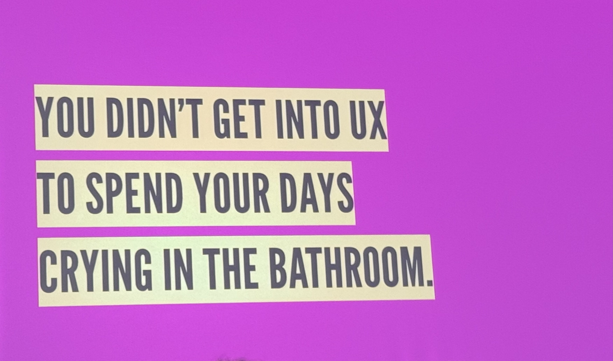
Keynote2026
You Didn't Get Into UX to Spend Your Days Crying in the Bathroom
Sara Wachter-Boettcher
Vocational awe weaponises passion. Burnout is structural, not personal. Stop patching symptoms and question the machine.
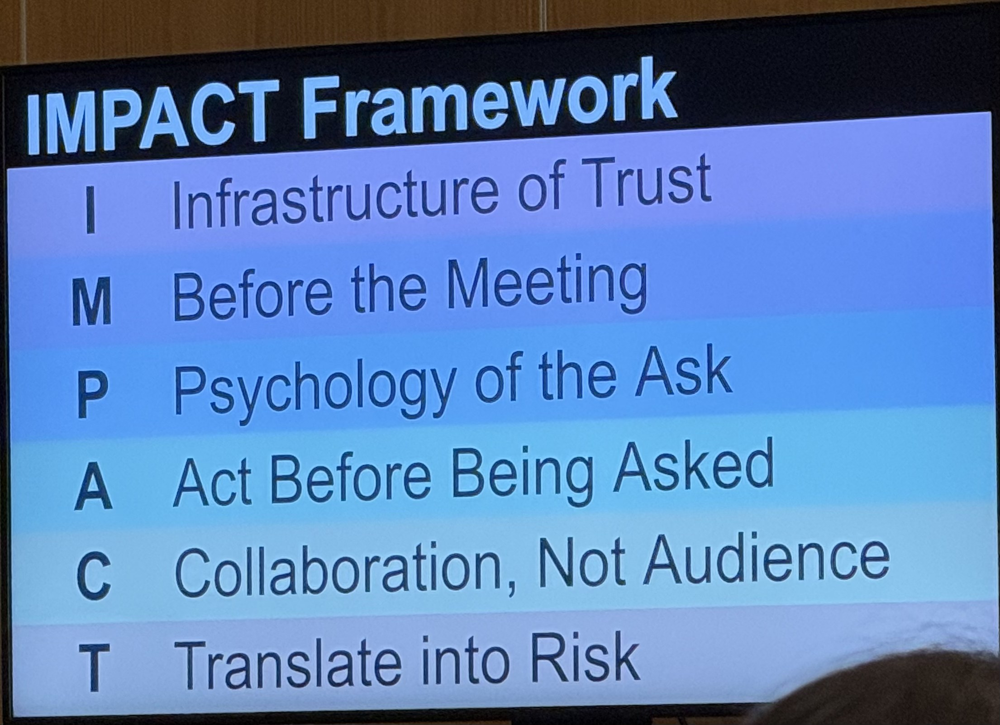
Talk2026
Influence Without Authority
Jennifer Blatz
IMPACT Framework + 30-60-90 Day plan. Seed before the meeting. Influence is won where expectations are formed, not where evidence is presented.
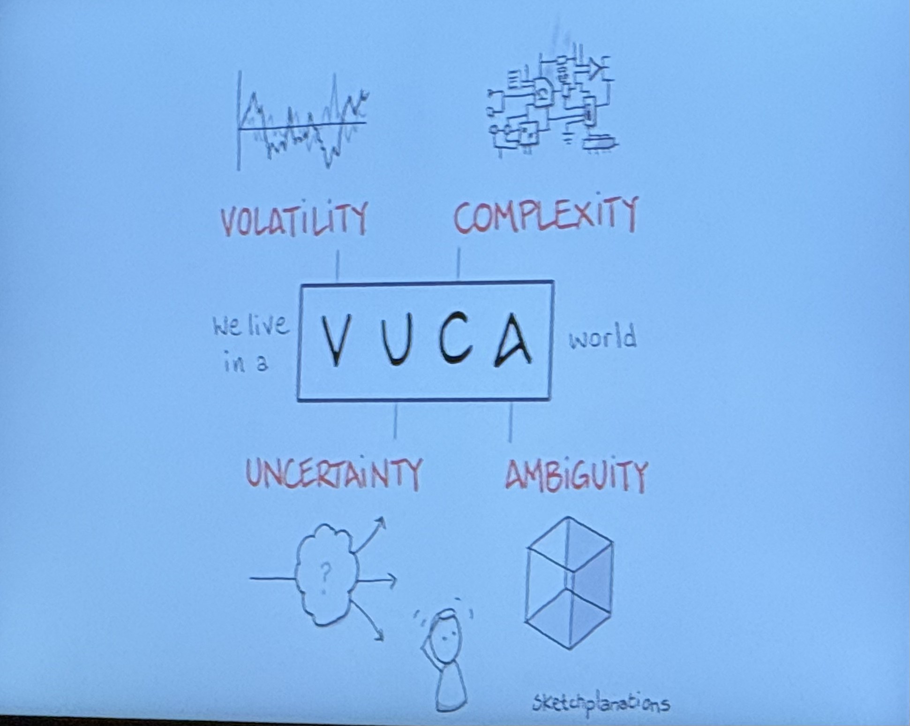
Talk2026
Designing in the Squeeze
Leonardo Caetano
The scarcity has moved from production to judgment. Escape the waiting trap. Human value lives in the things AI cannot do.
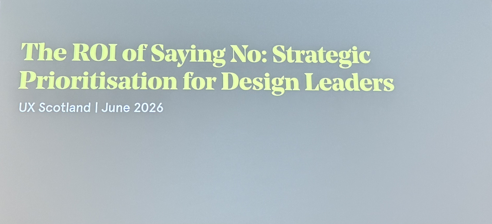
Talk2026
The ROI of Saying No
Vanessa Bennett
5 quick wins at 2h each = 3 designer-weeks gone. Loud vs Important vs Strategic. Saying no to reactive work cut post-sale costs by 36%.
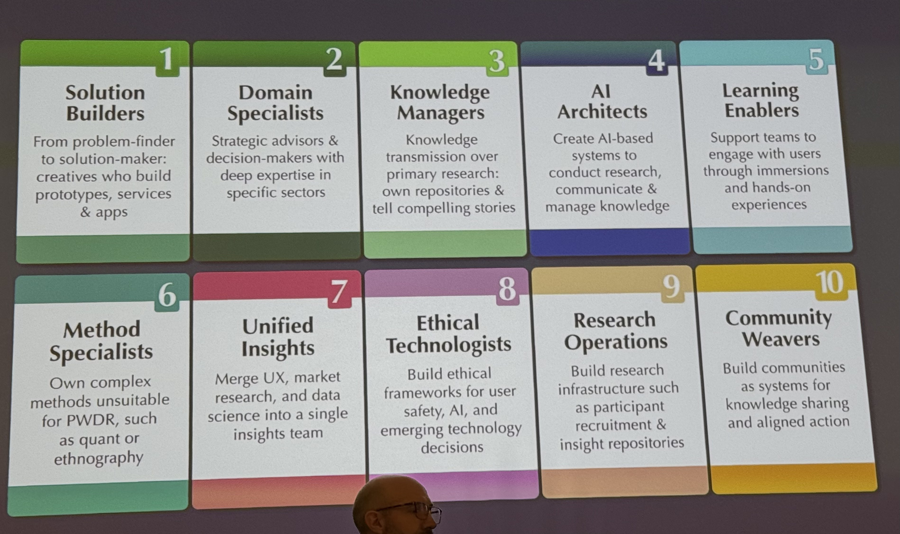
Talk2026
The New Makers
James Lang
Change-via-influence isn't enough. Change-via-making embeds your POV into a built artefact. 10 new researcher archetypes.
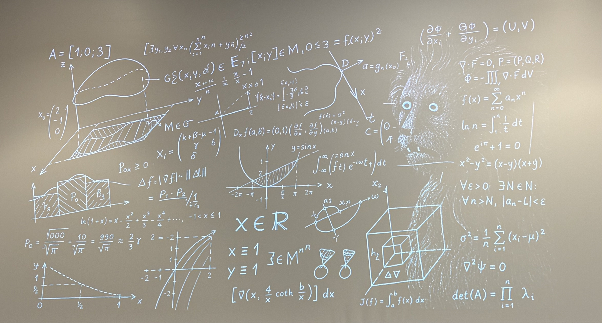
Talk2026
Hidden UX: How Kotlin Syntax Affects Comprehension
Natalia Mishina · JetBrains
The UX of programming languages is invisible — inside the developer's mind. Syntax research asks different questions than traditional UX.
Keynote2026
A Firmament Inside
Michael Kibedi · uxmichael.co
Design as an act of refusal. Computing history erased women and Black contributors. Conspire to transform — to breathe together.
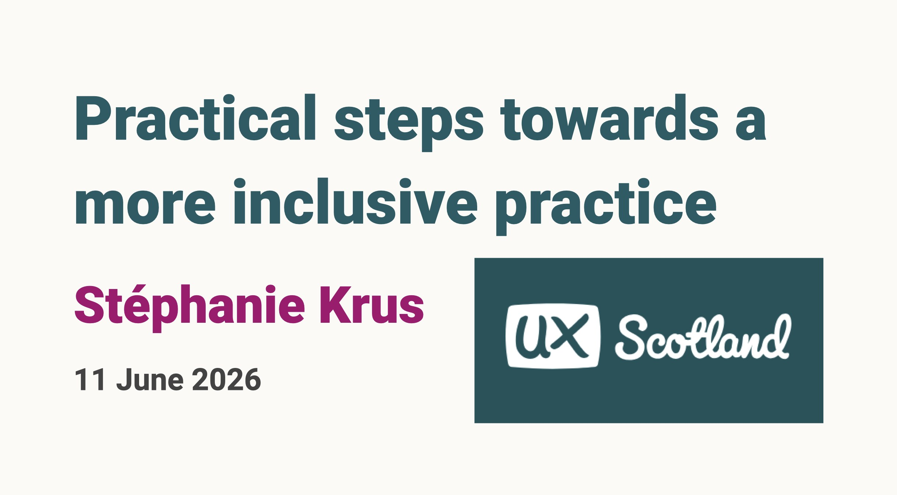
Talk2026
Practical Steps Towards a More Inclusive Practice
Stéphanie Krus · DWP Digital
Red = negative is culturally conditioned, not universal. Design best practices carry hidden cultural and neurotypical assumptions.
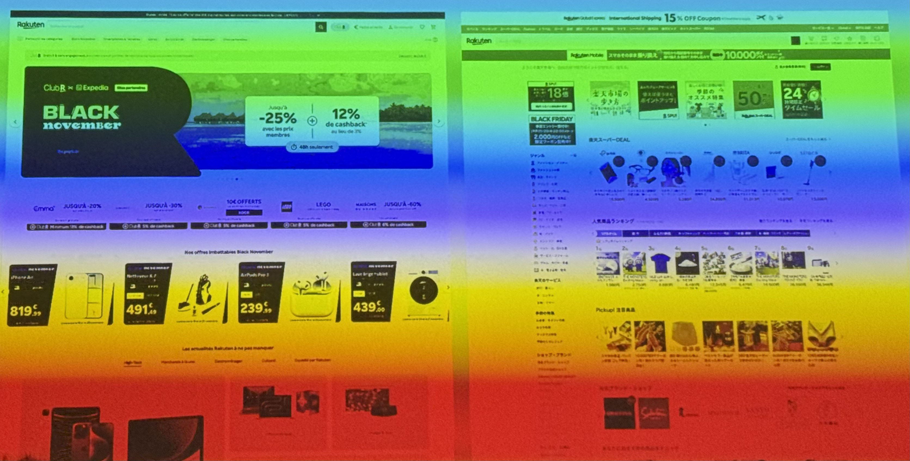
Talk2026
Cross-Cultural UX: When Universal Design Is Not Universal
Guillaume Vaslin · Keio University
Hofstede's 6 dimensions. High-UAI Japan wants structure and information density. Western UX defaults break globally.
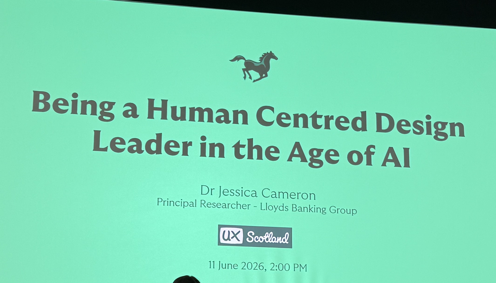
Talk2026
Being a Human Centred Design Leader in the Age of AI
Jessica Cameron · Lloyds Banking Group
Leading 80+ researchers across 20+ teams with zero line management. CoP infrastructure: playbook, templates, AI strategy.
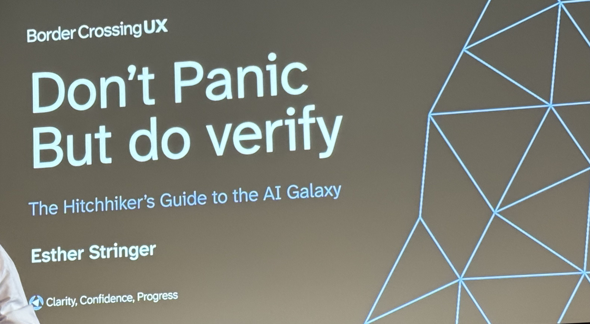
Talk2026
Don't Panic But Do Verify: The Hitchhiker's Guide to the AI Galaxy
Esther Stringer · Border Crossing UX
74% use AI, 14% trust autonomous systems. Human behaviour changes slower than tech. Value/Opportunity/Risk/Cost triangle.
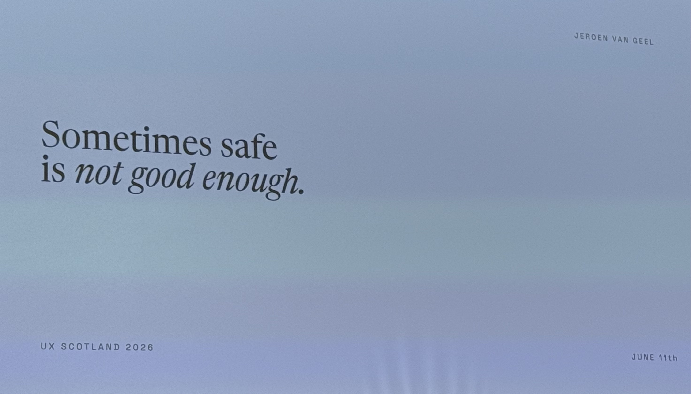
Keynote2026
What If_
Jeroen van Geel
The no you haven't heard is not real. 5,000 Before I Die walls, one afternoon, one bucket of paint. Find the smallest version and make it now.

Keynote2025
Designing the next evolution of us
Alphonso "Fonz" Morris
As AI commoditises execution, your competitive edge shifts to taste — not style, but judgment. A new designer vocabulary is non-negotiable.

Talk2025
How to make neurodivergent people love you
Rachel Morgan-Trimmer · Firebird
Neurodivergent users are the UX canaries in the coal mine — designing for them raises the quality floor for everyone.

Talk2025
Being the grown up: the one habit of highly effective leadership
Dan Healy · Made Tech
The Ladder of Accountability — 8 rungs from denial to implementation. Leadership is designing conversations.

Talk2025
Everything changes but you – design in the AI era
Ben Holliday · TPXimpact
GenAI is an average machine. Your job is to contribute the non-average. Design protects the emotional difficulty of being human.

Talk2025
Tech speak: a designer's guide to collaborating with software developers
Rebecca Gordon · TPXimpact
10 tips for bridging the designer–developer gap, including a full Design-to-Dev checklist as a Miro template.

Keynote2025
Designing in spacetime: a metaphysical framework
Vicki Tan · Pinterest
Products create ripple effects across time. A 4-step framework: imagine in spacetime → notice ripples → prototype across time → build temporal awareness.

Talk2025
The jamming's in the details!
Florence Okoye
Perchance random generator, World Café rotations, and disposable prototypes. Embrace randomness and chaos as design tools.

Talk2025
Navigating the UX career maze: beyond job descriptions
Hilary Brownlie · Standard Life
Line manager and lead are two entirely different jobs. No cookie cutters — lateral moves are not setbacks.

Talk2025
The forgotten art of field-based user research
Alex Barker · Consulting
Slow down. In-person rapport + environmental immersion + serendipity = user voice amplified. Bring clients along for the ride.

Talk2025
Bridging the gap: building better collaboration
Ade-Lee Adebiyi · SoPost
AER framework — Align, Educate, Reinforce. Data + Emotion = Convincing Arguments. Confidence invites discussion; arrogance shuts it down.

Keynote2025
Our humanity is needed
Indi Young · Adaptive Path
Synthetic users are unethical. The harm spectrum. Four thinking styles under oppression. The future belongs to the deepest listeners.

Lightning2025
Lightning talks: Leadership · Accessibility · Gamification · Kindness
Multiple speakers
Inclusive stock photo libraries (Allgo, Nappy, Jopwell…). Maya Angelou on kindness. Not all players are the same.